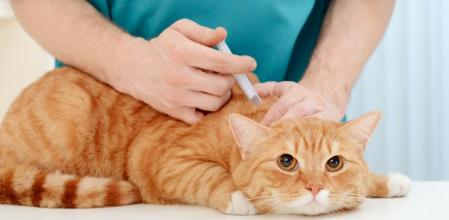
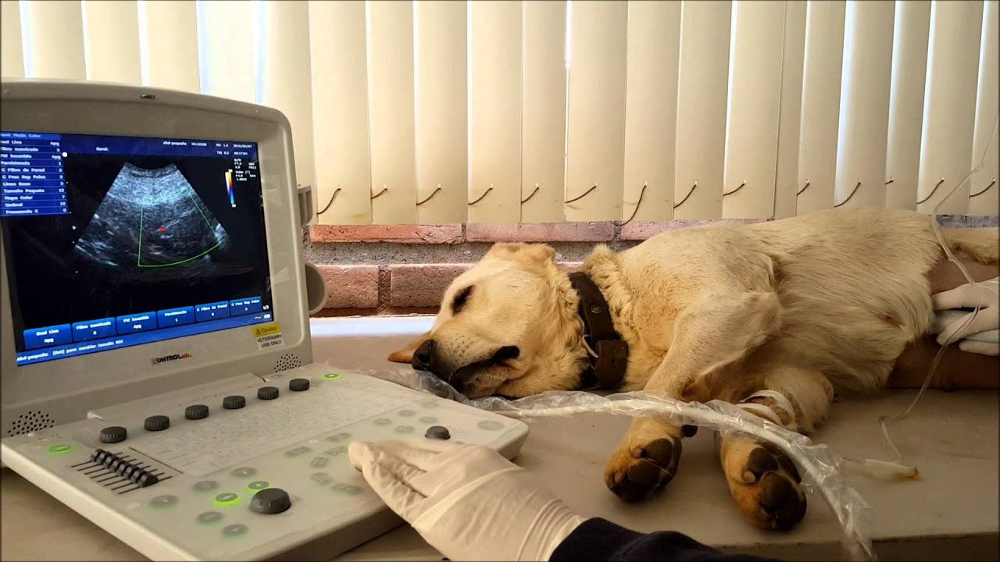

Nuestros Servicios

Medicina Preventiva/Curativa
- Vacunaciones completas
- Control de parásitos
- Programas de prevención
- Tratamiento de enfermedades
Análisis de Laboratorio
- Diagnóstico de enfermedades virales
- Exámenes dermatológicos
- Exámenes parasitológicos
- Urianálisis
- Citología
- Biometría hemática
- Química sanguínea

Procedimientos Diagnósticos
- Ultrasonidos
- Endoscopias
- Electrocardiogramas
- Exámenes oftalmológicos

Cirugía y Manejo Especializado
- Cirugía terapéutica
- Medicina de animales silvestres
- Restricción química por teleinyección
- Cuidados intensivos